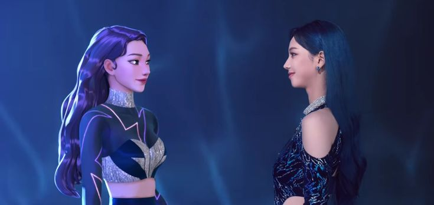
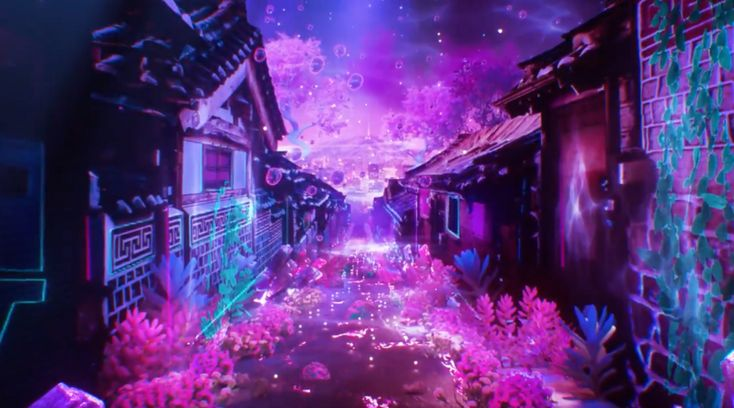
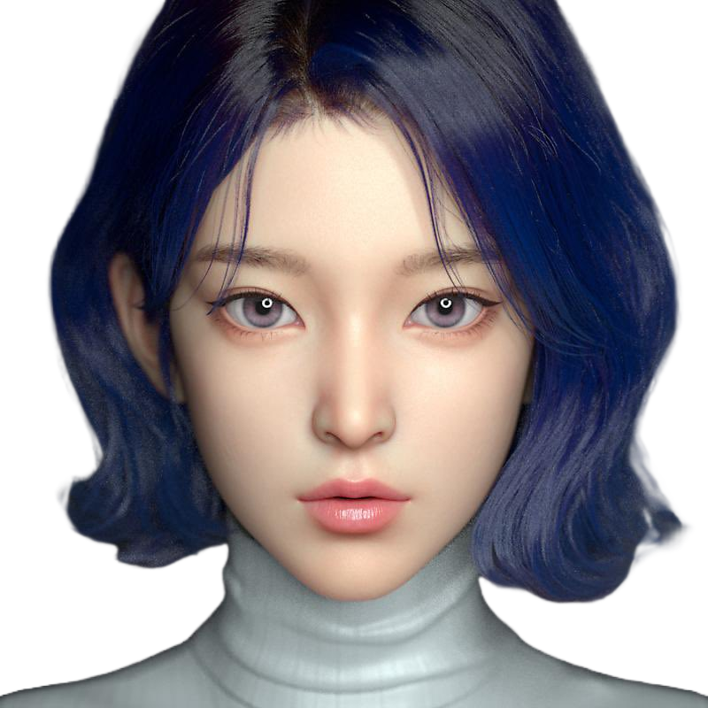

Conceito Central
O aespa é composto por quatro membros reais (Karina, Winter, Giselle e Ningning) e suas contrapartes virtuais chamadas "æ" (ae). Essas "ae" são avatares digitais que existem em um mundo virtual chamado FLAT, e cada uma delas representa uma extensão da personalidade e habilidades da respectiva integrante no mundo real.
As "ae" são conectadas às integrantes reais por meio de um sistema chamado SYNK, que permite que ambas coexistam e interajam. No entanto, essa conexão é ameaçada por forças malignas.
Elementos da Lore
Kwangya(광야);
Kwangya, que significa "selva" ou "deserto" em coreano, é um universo paralelo e um dos principais ambientes da história do grupo. Ele representa um espaço fora do mundo físico e digital, onde forças misteriosas e caóticas habitam. O aespa precisa viajar para Kwangya para enfrentar a Black Mamba e restaurar o equilíbrio entre os mundos real e virtual.
Black Mamba;
A Black Mamba é retratada como uma cobra negra gigante nos clipes. É uma vilã que interfere na conexão entre as integrantes e suas "ae". Ela corrompe o sistema SYNK e cria conflitos, tentando quebrar a ligação entre os dois mundos.
Synk;
É o sistema que conecta as integrantes reais às suas "ae". Porém, quando a Black Mamba interfere no SYNK, essa conexão fica instável, causando problemas e desafios.
Flat;
O FLAT, mundo virtual onde as 'ae' vivem, é um espaço seguro que o aespa luta para proteger e restaurar após ser ameaçado pela Black Mamba.
Nævis(네이비스);
É a inteligência artificial aliada do aespa. Ela ajuda as integrantes e suas "ae" a se conectarem e enfrentarem os desafios impostos pela Black Mamba. Nævis também guia o aespa em sua jornada até Kwangya.
Historia em Ordem Cronologica
Black Mamba (2020)
A estreia do aespa introduz o conceito das integrantes reais (Karina, Winter, Giselle e Ningning) e suas contrapartes virtuais, chamadas "ae". Essas "ae" existem no FLAT, um mundo virtual, e estão conectadas às integrantes reais pelo sistema SYNK. No entanto, algo começa a dar errado: a conexão entre elas é interrompida, e a vilã Black Mamba aparece como a causadora dessa instabilidade. Representada por uma cobra negra gigante, a Black Mamba espalha caos, corrompendo o FLAT e ameaçando quebrar o vínculo entre as integrantes e suas "ae".
A música e o videoclipe apresentam os principais elementos do universo do aespa: o FLAT, o sistema SYNK e a ameaça da Black Mamba. É o ponto de partida para a jornada do grupo, onde elas percebem que precisam proteger o equilíbrio entre os mundos real e virtual.
Next Level (2021)
Em "Next Level", o aespa dá o próximo passo em sua jornada. Elas decidem entrar no universo paralelo de Kwangya para rastrear e enfrentar a Black Mamba. Durante essa busca, elas enfrentam vários desafios que testam sua determinação e união. A música é marcada por mudanças de ritmo e tons que representam os diferentes estágios dessa jornada.
Kwangya é apresentado como um mundo vasto, caótico e desconhecido, onde a Black Mamba exerce sua influência. Essa viagem é uma declaração de coragem das integrantes, mostrando que estão dispostas a enfrentar o desconhecido para restaurar a conexão com suas "ae" e proteger o FLAT. A letra menciona diretamente o SYNK e a missão de derrotar a Black Mamba, aprofundando o universo narrativo.
Savage (2021)
O aespa finalmente chega ao confronto direto com a Black Mamba. Com a ajuda de Nævis, a inteligência artificial que age como sua aliada, elas enfrentam a vilã em uma batalha épica. Durante o confronto, a influência maligna da Black Mamba é quebrada, e o sistema SYNK começa a se restaurar. No entanto, a luta exige sacrifícios, e Nævis faz um grande ato de autossacrifício para garantir que o aespa vença.
"Savage" é o clímax da batalha contra a Black Mamba e encerra o primeiro grande arco narrativo. Nævis demonstra ser uma aliada vital, não apenas conectando as integrantes e suas "ae", mas também ajudando a superar a ameaça. A vitória do aespa simboliza sua evolução como heroínas no universo de Kwangya.
Dreams Come True (2021)
Essa música é um remake da faixa do S.E.S., mas ganha uma nova interpretação ao ser conectada ao aespa. É um momento de celebração, onde o grupo reflete sobre os sonhos que alcançaram e o que ainda está por vir.
Embora não avance diretamente a história, "Dreams Come True" reforça a mensagem de esperança e determinação. O aespa reafirma sua missão de proteger o FLAT e continuar explorando os mistérios de Kwangya.
Girls
O aespa retorna mais forte e determinado do que nunca. Em "Girls", elas finalizam a batalha contra a Black Mamba e estabelecem sua posição como defensoras do equilíbrio entre o mundo real e o virtual.
A vitória sobre a Black Mamba marca o fim de um arco narrativo significativo. No entanto, a lore sugere que novos desafios surgirão no futuro, deixando espaço para a expansão do universo. O videoclipe destaca o crescimento das integrantes como heroínas cibernéticas e apresenta pistas sobre mistérios ainda não resolvidos.
Welcome To MY World
Nesta faixa, o aespa convida o público e novas forças para explorar o mundo real, sendo uma celebração da união e da descoberta de novos horizontes. A letra convida o ouvinte a atravessar as fronteiras do conhecido e explorar um mundo novo e vibrante, onde as diferenças são celebradas e a conexão entre os indivíduos é enfatizada.
A música apresenta a presença de Karina, Winter, Giselle e Ningning, destacando a importância das conexões entre o real e o virtual. O grupo sugere que sua jornada não é apenas sobre proteger o FLAT, mas também sobre expandir e explorar novos horizontes.
Então é isso! Espero que você tenha gostado do nosso artigo explicando a lore do aespa e seu cativante universo.